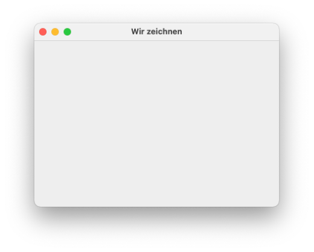
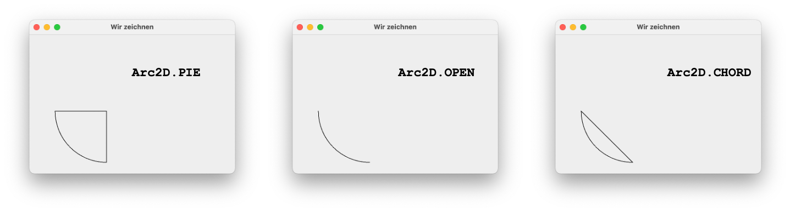
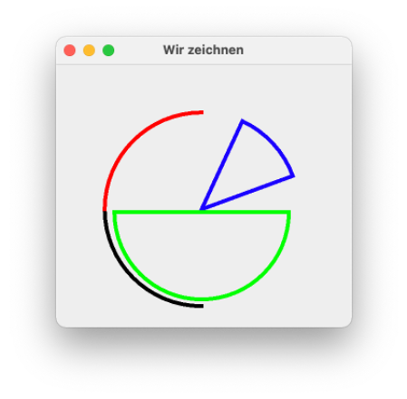
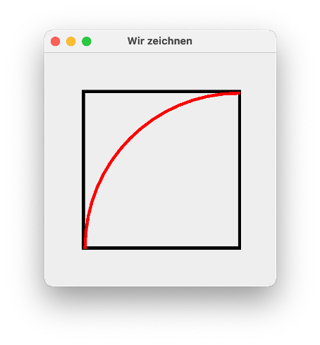
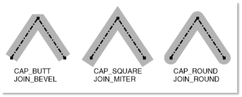
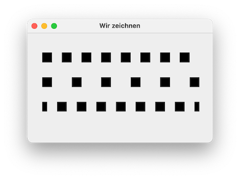
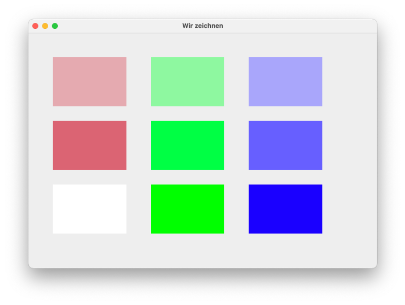
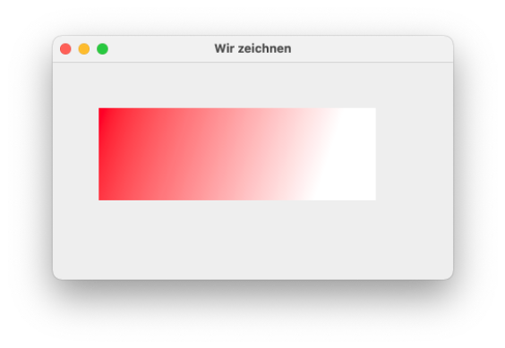
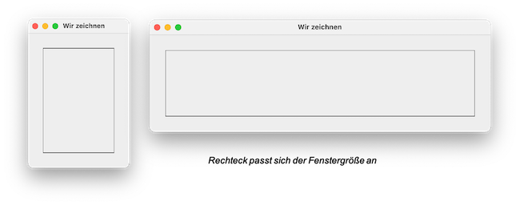
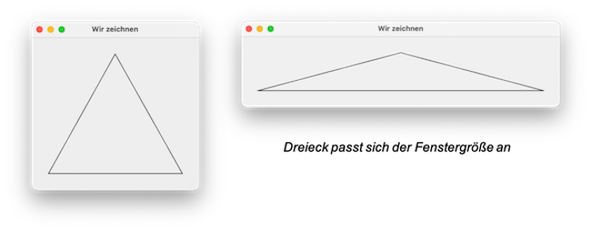

Graphics¶
Wir werden unsere GUI nun um eine Komponente erweitern, in der wir zeichnen können. Im Prinzip wird unsere GUI immer gezeichnet. Die Steuerelemente sind nur vorformatiert und bestehen aus lauter Linien, Polygonen und Punkten, die zusammen dann so, wie z.B. ein Button aussehen. Wenn wir eine GUI haben und dieses Fenster z.B. die Größe ändert, wird es dabei jedes Mal neu gezeichnet. Diese (Neu-)Zeichnen wird dadurch angestoßen, dass für unser JFrame die Methode paint() aufgerufen wird. Diese Methode wird z.B. auch in der Methode setVisible(true) aufgerufen.
Jede Komponente (also jedes Steuerelement und jeder Container) hat ihre eigene Objektmethode paint(), in der beschrieben ist, wie diese Komponente zu zeichnen ist. Genauer gesagt, werden in paint() folgende drei Methoden aufgerufen:
paintBorder()- zeichnet den Rahmen der KomponentepaintChildren()- ruftpaint()für alle Kindkomponenten auf (also z.B. alle Steurelemente in einemJPanel)paintComponent()- zeichnet die Komponente (und ihre Kinder)
Damit überhaupt Linien und Punkte dargestellt werden können, gibt es eine Klasse Graphics, die, etwas vereinfacht gesagt, die Schnittstelle zwischen Hardware (dem Monitor) und dem zu zeichnenden Fenster darstellt. Alle Komponenten eines Fensters teilen sich genau ein Objekt dieser Klasse Graphics. Bei diesem Objekt wird auch vom Graphics-Context (Grafikkontext) gesprochen. Diese Klasse stellt eine Vielzahl von Methoden zur Verfügung, um einfache geometrische Objekte zu zeichnen, z.B.
drawLine(), um eine Linie zu zeichnen,drawOval(), um eine (leere) Ellipse zu zeichnen,drawRect(), um ein (leeres) Rechteck zu zeichnen,drawPolygon(), um ein (leeres) Polygon (also ein Vieleck) zu zeichnen,drawString(), um ein Text zu zeichnen,fillOval(), um eine (ausgefüllte) Ellipse zu zeichnen,fillRect(), um ein (ausgefülltes) Rechteck zu zeichnen,fillPolygon(), um ein (ausgefülltes) Polygon (also ein Vieleck) zu zeichnen.
Damit nun alle paintX()-Methoden (also paint(), paintBorder(), paintComponent und paintChildren()) Zugriff auf diesen Grafikkontext (das Objekt von Graphics) bekommen, wird es diesen Methoden übergeben. Das heißt, die Methoden sind so deklariert (alle void):
paint(Graphics g)paintBorder(Graphics g)paintChildren(Graphics g)paintComponent(Graphics g)
Die Graphics-Klasse gibt es schon seit Java 1.0. Allerdings hat man bereits sehr früh festgestellt, dass die Methoden in dieser Klasse nicht genügen, um "schöne" Grafiken zu erstellen. Deshalb hat man bereits in Java 1.1 eine neue Klasse Graphics2D eingeführt (hat von Graphics geerbt), in der hauptsächlich die Darstellung der geometrischen Objekte verbessert wurde, aber in der auch einige Methoden dazukamen, um z.B. andere Linienformen (gestrichelt, gepunktet, ...) zu definieren, andere Fonts für den Text usw. Tatsächlich handelt es sich seit JDK 1.2 bei dem Grafikkontext, also dem Graphics-Objekt g um ein Objekt der Klasse Graphics2D.
Eigene geometrische Objekte zeichnen¶
Bevor wir eigene geometrische Objekte zeichnen können, schauen wir zunächst nochmal auf unser "Grundgerüst" für eine GUI (siehe Kapitel GUI Einführung):
Darin erzeugt die Methode initContent() ein JPanel und gibt es zurück. Dieses JPanel wird der ContentPane unseres Fensters hinzugefügt (Zeile 13). Somit hat das JFrame ein Kind, nämlich das der ContentPane hinzugefügte JPanel. Wenn das JFrame nun gezeichnet wird, wird für dieses JPanel die Methode paintComponent(Graphics g) aufgerufen. Diese ist für ein JPanel so implementiert, dass ein hellgraues Rechteck ohne Rand (Border) gezeichnet wird. Würden wir dem mainPanel in der initContent()-Methode nun weitere Komponenten (Container oder Steuerlemente) hinzufügen, so würden diese alle so gezeichnet werden, wie für diese Komponenten die paintComponent(Graphics g)-Methode implementiert ist.
Wir wollen nun aber selbst die paintComponent(Graphics g)-Methode für eine Komponente implementieren. Dazu entscheiden wir uns dafür, die paintComponent()-Methode von einem JPanel zu implementieren. Aber wie kommen wir an diese Implementierung ran? Indem wir von JPanel erben. Wenn wir eine Klasse erstellen, die von JPanel erbt, dann erben wir auch die Implementierung der paintComponent()-Methode von JPanel und können diese überschreiben.
Wir ändern dafür unser "Grundgerüst":
An der Darstellung des Fensters ändert das zunächst gar nichts. Wenn wir das Programm ausführen, dann erscheint folgendes Fenster.

Das der ContentPane hinzugefügte JPanel wird also "ganz normal" als hellgraues Rechteck dargestellt. Der große Unterschied ist, dass es sich nun um ein Objekt unserer inneren Klasse Canvas handelt. Diese hat von JPanel geerbt. Ein Objekt von Canvas ist somit auch ein Objekt vom Typ JPanel. Aber wir können in Canvas die Methode paintComponent(Graphics g) überschreiben und somit eine eigene Implementierung für das Zeichnen unserer Komponente (einem Canvas-Objekt) erstellen.
Innerhalb unserer eigenen Implementierung der paintComponent()-Methode rufen wir zunächst die paintComponent()-Methode von JPanel auf. Damit wird ein hellgraues Rechteck gezeichnet. Das sollten wir immer tun, da ansonsten manchmal unschöne Nebeneffekte entstehen.
Außerdem sollten wir auch immer das Graphics-Objekt nach Graphics2D konvertieren, da uns in Graphics2D deutlich mehr Methoden zur Verfügung stehen (siehe z.B. hier und hier).
Übung
Die Methode draw3DRect() ist ein Beispiel für eine Methode, die in der Graphics2D-Klasse implementiert ist, aber in der Klasse Graphics nicht vorkommt.
1. Warum funktioniert Graphics2D g2 = (Graphics2D)g; ?
2. Warum funktioniert g.draw3DRect() nicht, aber g2.draw3DRect() doch (wenn jeweils Parameterliste stimmt)?
Erste geometrische Objekte¶
Unser Fenster ist nun soweit vorbereitet und wir überschreiben die paintComponent()-Methode in unserer Klasse Canvas. Nun können wir darin beliebige Grafiken einfügen. Dazu rufen wir Methoden von Graphics2D auf.
Die Methode drawRect(int x, int y, int width, int height) zeichnet ein Rechteck mit der Breite width und der Höhe height. Bei uns hat beides den Wert 200 und somit wird ein Quadrat gezeichnet. Die Werte x und y stehen für die Koordinaten des linken oberen Punktes des Rechtecks innerhalb des JPanels, in dem wir zeichnen (also innerhalb der ContentPane). Der linke obere Punkt des JPanel hat die Koordinaten (0,0), also gehen wir in dem Beispiel um 40 Pixel nach rechts und um 30 Pixel nach unten, um mit dem Zeichnen des Quadrates zu beginnen.
Die Methode drawOval(int x, int y, int width, int height) zeichnet eine Ellipse mit der Breite width und der Höhe height. Bei uns hat beides den Wert 200 und somit wird ein Kreis gezeichnet. Die Werte x und y stehen für die Koordinaten des linken oberen Punktes des gedachten Tangenetenvierecks um die Ellipse.
Der linke obere "Startpunkt" ist hier sowohl für den Kreis, als auch für das Quadrat der gleiche. Da auch Höhe und Breite jeweils gleich sind, passen die geometrischen Objekte genau ineinander, d.h. das Quadrat beschreibt das Tangenetenviereck um den Kreis.

Sie können nun gerne beliebig die Methoden aus Graphics2D ausprobieren. Es macht Spaß! Gerne auch beliebige Muster, z.B.

Anstelle der "vorgefertigten" Methoden für das Zeichnen von Rechtecken (drawRect()) und Ellipsen (drawOval()), können Sie auch immer erst entsprechende Objekte erzeugen und diese mithilfe der draw()-Methode zeichnen lassen, z.B.
Das Interface Shape ist aus dem java.awt-Paket und die geometrischen Objekte sind aus dem java.awt.geom-Paket. Der Vorteil ist, dass für die geometrischen Objekte selbst viele Methoden existieren, um z.B. die Eigenschaften dieser Objekte abzufragen (z.B. Höhe oder Breite). Es gibt viele solcher Klassen - siehe dazu Shape und darin All Known Implementing Classes.
Ein Kreisbogen kann z.B. mithilfe der Klassen Arc2D.Double oder Arc2D.Float gezeichnet werden. Ein Kreisbogen ist ein Teil einer Ellipse. Die Konstruktoren erwarten jeweils 7 Parameter (gibt auch jeweils noch andere Konstruktoren):
x, x-Wert der linken oberen Ecke des Tangentenvierecks um die (gesamte) Ellipse,y, y-Wert der linken oberen Ecke des Tangentenvierecks um die (gesamte) Ellipse,width, Breite der (gesamten) Ellipse,height, Höhe der (gesamten) Ellipse,start, Startpunkt des Kreisbogens in Grad (0 ist "3 Uhr", 90 ist "12 Uhr", 180 ist "9 Uhr", 270 ist "6 Uhr"),extent, Länge des Kreisbogens in Grad (90 ist Viertelkreis, 180 ist Halbkreis, positiver Wert "gegen die Uhr", negativer Wert "mit der Uhr"),type, Auswahl zwischenArc2D.OPEN,Arc2D.PIEundArc2D.CHORD, siehe Abbildung.

Beispiele

Übung
Erstellen Sie folgende Zeichnung:

Um die geometrischen Objekte gefüllt darzustellen, verwenden Sie anstelle von draw(Shape s) die fill(Shape s)-Methode.
Linien¶
Die Linienart setzen Sie mithilfe der Methode g2.setStroke(Stroke s). Das Interface Stroke wird von der Klasse BasicStroke implementiert (Beides aus dem java.awt-Paket). Das bedeutet, der Methode setStroke() wird ein BasicStroke-Objekt übergeben.
Die Klasse BasicStroke besitzt folgende Konstruktoren:
BasicStroke()BasicStroke(float width)BasicStroke(float width, int cap, int join)BasicStroke(float width, int cap, int join, float miterlimit)BasicStroke(float width, int cap, int join, float miterlimit, float[] dash, float dash_phase)
Dabei gibt
- width die Linienstärke als float an, z.B. new BasicStroke(4.0f),
- cap beschreibt die Enden einer Linie. Es stehen drei vordefinierte Konstanten zur Verfügung: CAP_BUTT, CAP_ROUND und CAP_SQUARE
Beispiel:
ergibt:

- Die Eigenschaft
joinvonBasicStrokegibt an, wie sich zwei Linien an den Endpunkten verbinden. Es gibt die drei vordefinierten KonstantenJOIN_BEVEL,JOIN_MITERundJOIN_ROUND. Die Unterscheidung zeigt am besten die folgende Grafik:

- Mit dem
joinvon Linien hat auchmiterlimitzu tun. Es muss größer gleich1.0fsein und ist nur fürJOIN_MITERvon Bedeutung. - Mit
dashkann einfloat[]für ein Muster des Strichelns der Linie angegeben werden. - Mit
dash_phasekann angegeben werden, nach welcher Verzögerung die Anwendung desdash-Musters erfolgt.
Beispiel:
ergibt:

Farben¶
Das Java-Farbmodell basiert auf dem RGB-Farbmodell, wobei jede Farbe durch 24Bit repräsentiert wird (24Bit Farbtiefe). Das bedeutet, dass für jeden Farbanteil von Rot, Grün, Blau jeweils 8Bit zur Verfügung stehen und die einzelnen Farbanteile somit einen Wert zwischen 0 und 255 annehmen können. Einige Farben und deren Farbanteile von Rot, Grün und Blau sind in der folgenden Tabelle dargestellt:
| Farbe | Rot-Anteil | Grün-Anteil | Blau-Anteil |
|---|---|---|---|
| Weiß | 255 | 255 | 255 |
| Schwarz | 0 | 0 | 0 |
| Grau | 127 | 127 | 127 |
| Rot | 255 | 0 | 0 |
| Grün | 0 | 255 | 0 |
| Blau | 0 | 0 | 255 |
| Gelb | 255 | 255 | 0 |
| Magenta | 255 | 0 | 255 |
| Cyan | 0 | 255 | 255 |
Die Klasse Color aus dem java.awt-Paket besitzt sieben Konstruktoren. Die wichtigsten sind
public Color(int r, int g, int b), mit denint-Werten jeweils von0bis255für die Farbanteile,public Color(float r, float g, float b), mit denfloat-Werten jeweils von0.0fbis1.0ffür die Farbanteile,
und die Pendants mit einem zusätzlichen Alpha-Anteil für die Transparenz:
public Color(int r, int g, int b, int alpha),0bis255(0vollständig transparent,255deckend),public Color(float r, float g, float b, float alpha),0.0fbis1.0f(0vollständig transparent,1.0deckend).
In Color sind darüber hinaus folgende Farben als statische Konstanten definiert:
WHITE,BLACK,BLUE,CYAN,DARKGRAY,GRAY,GREEN,LIGHTGRAY,MAGENTA,ORANGE,PINK,RED,YELLOW
Beispiel:
ergibt:

Mit den Klassen LinearGradientPaint und GradientPaint können Farbverläufe implementiert werden.
Beispiel:
ergibt:

Höhe und Breite abhängig von der Canvas-Größe¶
Angenommen, Sie wollen eine geometrischen Figur so zeichnen, dass sich ihre Größe der Größe des Fensters anpasst. Dazu stehen Ihnen die Methoden getHeight() und getWidth() von JPanel (und somit von Ihrem Canvas-Objekt) zur Verfügung. Die linke obere Ecke des JPanels hat die Koordinaten [x=0, y=0] und die rechte untere Ecke hat die Koordinaten [x=this.getWidth(), y= this.getHeight()], d.h
- für den linken Rand gilt
x = 0, - für den rechten Rand gilt
x = this.width(), - für den oberen Rand gilt
y = 0und - für den unteren Rand gilt
y = this.height().
Angenommen, wir wollen ein Rechteck einpassen, das jeweils 30 Pixel von allen vier Rändern Abstand hat, dann definieren wir:
Beispiel:
ergibt:

noch ein Beispiel - wir passen ein Dreieck in das Fenster ein:
ergibt:

Success
Wir können eigene Grafiken erstellen. Wir erstellen dazu eine innere Klasse, die von JPanel erbt. Der Grund dafür ist, dass wir die Methode paintComponent(Graphics g) überschreiben wollen und darin mithilfe der Methoden aus der Klasse Grahpcs2D geometrische Objekte erstellen. Außerdem haben wir das Farbmodell von Java kennengelernt und können die Grafiken an die Fenstergröße anpassen. In der kommenden Lektion lernen wir, wie wir mithilfe der Maus zeichnen können.